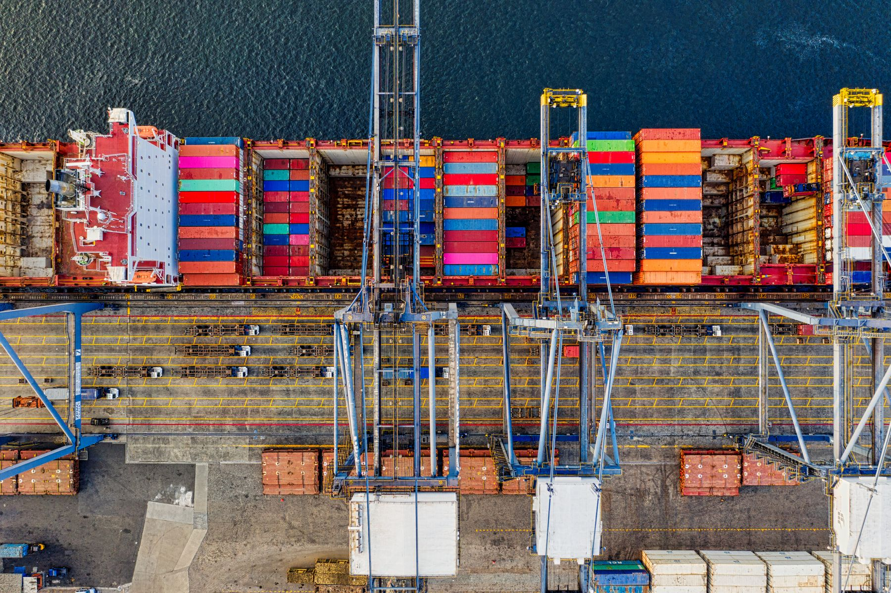

01 / LAND TRANSPORT
EVERY JOURNEY
STARTS WITH
A FIRST MILE.
The collection. The connection. The road ahead.
A good
start makes all the difference.
READY FOR DEPARTURE
ONE CONNECTED JOURNEY
From the first collection to the final handover.
Freight that
moves as one.
01 / A BETTER WAY FORWARD
Good logistics is a connection.
Between people. Between
places.
Between a promise and its delivery.
Wayline imagines a simpler supply chain: a clear route, a connected team and care at every handover. Road, sea and air become one considered journey.
Discover the approach ↗
From collection to delivery.
Considered. Connected. Clear.
People, places and possibilities.
02 / FOLLOW THE FREIGHT
01 — LAND01 / LAND TRANSPORT
The collection. The connection. The road ahead.
A good
start makes all the difference.
02 / THE TERMINAL
A container changes hands.
The care stays with it.
03 / OCEAN FREIGHT
Across the water, every connection counts.
One world. A
thousand ways forward.
04 / AIR FREIGHT
When time matters, take the faster route.
A considered
move, at a different altitude.
03 / THE COMPLETE PICTURE
A considered service for each leg of the journey.
Choose a mode
to explore.
 LAND TRANSPORT / FIRST TO LAST MILE
LAND TRANSPORT / FIRST TO LAST MILE
Collection, linehaul and final delivery, designed as one connected movement. A clear plan from the first mile to the last.
Container movements across the water. A considered route and a clear handover from port to destination.
For shipments with a tighter timeline, connect air with road and terminal handling in one carefully planned journey.
Storage, picking and distribution that bring the wider supply chain together. Room for your business to move forward.
04 / THINK BEYOND BORDERS
Your next destination starts with a connection.
Explore an
illustrative Asia-Pacific route network.
ILLUSTRATIVE ROUTES / PORTFOLIO CONCEPT
05 / A CLEAR WAY AHEAD
Start with your cargo, destination and timeline. Road connects local movements, ocean suits containerised freight and air serves time-sensitive shipments. The right plan may combine modes.
Origin, destination, cargo description, dimensions, weight and the date you need it moved. Add any special handling requirements so the movement can be considered properly.
Wayline is a fictional brand created to demonstrate an interactive logistics website. The transport graphics and journeys are illustrative. No freight services are sold through this site.
YOUR NEXT MOVE STARTS HERE.
A freight & logistics website concept.
Designed and built by
Hemal Herath.